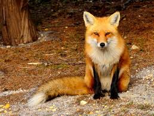
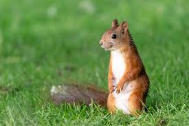
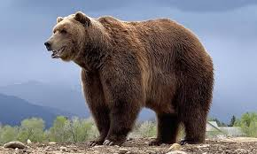
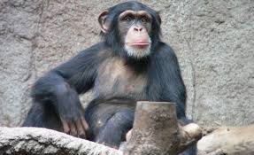
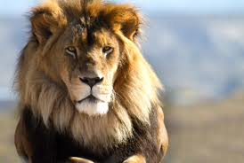

Animais Fantásticos
- 
- 
- 
-

- 
- 
Raposa
A raposa é um mamífero carnívoro da família Canidae, conhecida por sua astúcia e grande capacidade de adaptação. A espécie mais comum, a raposa-vermelha (Vulpes vulpes), possui pelagem avermelhada, uma cauda longa e peluda que auxilia no equilíbrio e na comunicação, além de orelhas pontudas e focinho alongado. São animais solitários e territorialistas, preferindo caçar à noite e se abrigar em tocas durante o dia.
Embora sejam predadores, as raposas possuem uma dieta variada e oportunista. Elas caçam pequenos mamíferos, aves e insetos, mas também se alimentam de frutas e restos de comida deixados por humanos. Essa flexibilidade alimentar permite que sobrevivam em diferentes ambientes, incluindo florestas, campos, desertos e até áreas urbanas. Algumas espécies, como a raposa-do-ártico, possuem adaptações especiais para climas extremos.
Esquilo
Os esquilos são pequenos roedores da família Sciuridae, encontrados em diversas partes do mundo, exceto na Austrália e na Antártida. São conhecidos por sua agilidade e comportamento curioso, sendo capazes de escalar árvores com rapidez e saltar grandes distâncias. Possuem uma cauda longa e peluda, que auxilia no equilíbrio e na comunicação entre indivíduos. Suas patas dianteiras são habilidosas e permitem que manipulem alimentos com destreza.
A alimentação dos esquilos é baseada principalmente em sementes, nozes e frutas, mas algumas espécies podem consumir insetos e pequenos vertebrados. Durante o outono, muitos esquilos armazenam comida em buracos no solo ou em troncos ocos para consumir no inverno. Graças à sua excelente memória espacial, conseguem se lembrar da localização exata desses esconderijos. Esse hábito contribui para a dispersão de sementes e a regeneração das florestas.
Urso
Os ursos são mamíferos de grande porte da família Ursidae, encontrados em diversos habitats, como florestas, montanhas e tundras. São animais robustos, com garras afiadas e excelente olfato, o que os torna predadores eficientes e exímios farejadores. Existem várias espécies, como o urso-pardo, o urso-negro e o urso-polar, cada um com características adaptadas ao seu ambiente.
A alimentação dos ursos varia conforme a espécie e a disponibilidade de recursos. Embora sejam classificados como carnívoros, a maioria das espécies é onívora, consumindo frutas, raízes, mel, peixes e pequenos mamíferos. Durante o outono, muitos ursos acumulam grandes quantidades de gordura para sobreviver à hibernação no inverno. Nesse período, eles reduzem seu metabolismo e passam meses sem se alimentar ou beber água.
Lobo
O lobo (Canis lupus) é um mamífero carnívoro altamente social, conhecido por viver em matilhas bem organizadas. Cada matilha possui uma estrutura hierárquica definida, liderada por um casal alfa, que coordena as caçadas e protege o grupo. Os lobos possuem grande resistência física e são capazes de percorrer longas distâncias em busca de alimento, caçando em equipe para derrubar presas grandes como alces e bisões.
A comunicação entre os lobos é altamente sofisticada e ocorre por meio de uivos, expressões faciais, postura corporal e marcações de cheiro. Seus uivos podem ser ouvidos a quilômetros de distância e servem para reunir a matilha ou demarcar território. São animais territoriais e defendem suas áreas contra intrusos, garantindo a sobrevivência do grupo. Além disso, possuem um forte instinto cooperativo e cuidam uns dos outros.
Macaco
Os macacos são primatas inteligentes e sociáveis, pertencentes à ordem dos primatas e encontrados em florestas tropicais, savanas e montanhas. Apresentam grande diversidade de espécies, variando em tamanho, comportamento e habitat. Possuem mãos e pés preênseis, permitindo-lhes segurar objetos e se locomover com agilidade entre os galhos das árvores. Algumas espécies, como os macacos-prego, são conhecidas por seu uso de ferramentas para obter alimento.
A dieta dos macacos é majoritariamente onívora, composta por frutas, folhas, sementes e pequenos animais. São animais altamente sociais e vivem em grupos organizados, nos quais há hierarquia e interações complexas. A comunicação ocorre por vocalizações, gestos, expressões faciais e até contato físico, como o ato de se limpar mutuamente, que fortalece os laços entre os membros do grupo.
Leão
O leão (Panthera leo) é um dos maiores felinos do mundo e um dos predadores mais temidos da savana africana. Diferente de outros grandes felinos, os leões vivem em grupos chamados de alcateias, compostos por fêmeas, filhotes e um ou poucos machos dominantes. Os machos são facilmente reconhecidos por sua juba volumosa, que serve como sinal de força e atratividade. Já as fêmeas desempenham um papel essencial na caça e na proteção dos filhotes.
Os leões são caçadores habilidosos e cooperam em grupo para derrubar grandes presas, como zebras, gnus e búfalos. As fêmeas lideram as caçadas, utilizando estratégia e trabalho em equipe para cercar e capturar suas presas. Apesar de sua força, os leões passam grande parte do dia descansando, chegando a dormir até 20 horas por dia para conservar energia. Rugem alto para se comunicar com membros do bando e marcar território.